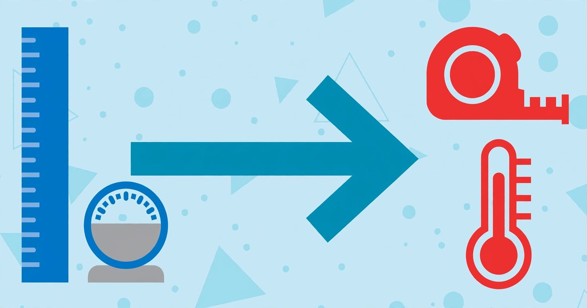

How to Convert Units Online
Miles to kilometres, pounds to kilograms, Fahrenheit to Celsius — exact conversions in seconds, no maths required.
October 21, 2026 · 6 min read

You are following a recipe that lists cups when your measuring jug shows litres. A product listing gives the size in inches, and you think in centimetres. A fitness plan quotes pace in minutes per mile, and you need it per kilometre. Every one of these is a unit conversion — and getting it wrong can spoil the recipe, the purchase, or the workout.
Conversion is just multiplication by a fixed ratio, but the ratios are awkward: one mile is exactly 1,609.344 metres, not a round number. Temperature scales are worse, because Celsius and Fahrenheit are shifted, not just scaled — you cannot multiply your way from one to the other. And square and cubic units do not scale the way their linear versions do. This guide shows you how to convert units online in seconds with the Unit Converter, which units it covers, and the mistakes that make hand conversions wrong.
What the Unit Converter covers
The tool converts 40 units across six categories, all instantly and entirely in your browser:
- Length: millimetres, centimetres, metres, kilometres, inches, feet, yards, miles.
- Weight: grams, kilograms, ounces, pounds, stones, tonnes (metric tonnes of 1,000 kg).
- Temperature: Celsius, Fahrenheit, Kelvin — converted with the proper formulas, not factors.
- Speed: metres/second, kilometres/hour, miles/hour, feet/second, knots.
- Area: square centimetres, square metres, hectares, square kilometres, square inches, square feet, square yards, acres, square miles.
- Volume: millilitres, litres, cubic metres, US fluid ounces, US cups, US pints, US gallons, cubic inches, cubic feet.
The volume units are the US versions (US gallons, US cups, US fluid ounces) — worth knowing if your source material is British, where the imperial gallon is about 20% larger.
Convert a unit in 5 steps
- Open the Unit Converter — it runs entirely in your browser, so nothing you type is uploaded anywhere.
- Pick the category — Length, Weight, Temperature, Speed, Area or Volume. This sets which units are offered.
- Choose the "From unit" and type your value. Decimals are accepted, so 2.5 feet works as well as 3.
- Choose the "To unit". The result appears instantly in the second box, with a line showing the full equation (for example, 5 mi = 8.04672 km), so you can see exactly how the number was produced.
- Use ⇄ Swap units to flip the conversion direction without retyping — handy when you convert miles to kilometres and then realise you wanted the reverse.
Worked examples (recomputed, not guessed)
Here are five conversions with the real maths, so you can see what the tool is doing under the hood:
- 5 miles → kilometres: 1 mile is exactly 1,609.344 metres, so 5 × 1,609.344 = 8,046.72 m = 8.04672 km (about 8.05 km).
- 150 pounds → kilograms: 1 lb is exactly 0.45359237 kg, so 150 × 0.45359237 = 68.0388555 kg (about 68.04 kg).
- 98.6 °F → °C: the formula is (°F − 32) × 5/9, so (98.6 − 32) × 5/9 = 66.6 × 5/9 = 37.0 °C — normal human body temperature, as expected.
- 100 km/h → mph: 1 mile = 1.609344 km, so 100 ÷ 1.609344 = 62.1371 mph (about 62.14 mph).
- 2 US gallons → litres: 1 US gallon is 3.785411784 L, so 2 × 3.785411784 = 7.570823568 L (about 7.57 L).
Conversions worth memorising
| Conversion | Exact ratio | Use it for |
|---|---|---|
| 1 inch | = 2.54 cm (exact) | Screen sizes, product dimensions |
| 1 mile | = 1.609344 km (exact) | Distances, running paces |
| 1 pound | = 0.45359237 kg (exact) | Body weight, shipping weights |
| 1 ounce | = 28.349523125 g (exact) | Cooking, postage |
| 1 US gallon | = 3.785411784 L (exact) | Fuel economy, tank capacities |
| °F ↔ °C | °F = °C × 9/5 + 32 | Weather, oven temperatures |
| 1 acre | = 4,046.8564224 m² (exact) | Land and plot sizes |
One curiosity worth knowing: −40 °F and −40 °C are the same temperature — the only point where the two scales meet.
5 mistakes that make unit conversions wrong
- Converting temperature by ratio. Celsius and Fahrenheit are offset scales, not proportional ones — doubling 10 °C to "20 °C" does not double anything physical. Always use °F = °C × 9/5 + 32 (or the tool), never a simple multiplier.
- Using the wrong gallon. This tool uses US gallons (3.785 L). The imperial gallon is 4.546 L — about 20% larger. If your recipe or manual is British, its gallon figures will be bigger than the tool's.
- Mixing up fluid ounces and ounces. US fluid ounces are a volume (29.57 mL) and sit in the Volume category; ounces are a weight (28.35 g) and sit in Weight. They coincide only for water-like liquids — 8 fl oz of flour does not weigh 8 oz.
- Scaling square and cubic units linearly. 1 metre is 100 cm, but 1 m² is 10,000 cm² (100²) and 1 m³ is 1,000,000 cm³ (100³). Square the ratio for area, cube it for volume — this is the most common hand-conversion error.
- "Ton" confusion. The tool's tonne is the metric tonne: 1,000 kg. A US short ton is 907.185 kg — roughly 10% lighter. Check which ton your source figure uses before converting.
Frequently asked questions
Is the online unit converter accurate?
Yes — most length, weight and volume conversions use exact international definitions (an inch is defined as exactly 2.54 cm; a pound as exactly 0.45359237 kg), and temperature uses the standard conversion formulas. The result is only as accurate as the number you type in.
Do I need an account to use it?
No. Like every ToolsHub tool, the converter runs 100% in your browser — no signup, no downloads, and the values you enter are never sent to a server.
Why doesn't it convert currencies?
Exchange rates move every minute, so currency conversion needs live rates. That is a separate tool — the Currency Converter — while this one covers the fixed physical units that never change.
Why do results show so many decimals?
Exact ratios produce long decimals (150 lb is 68.0388555 kg). Round the answer to the precision your task needs: two decimals is plenty for shopping, recipes and fitness; keep more only when the number feeds another calculation.
Related tools: Unit Converter · Currency Converter · Percentage Calculator · Discount Calculator